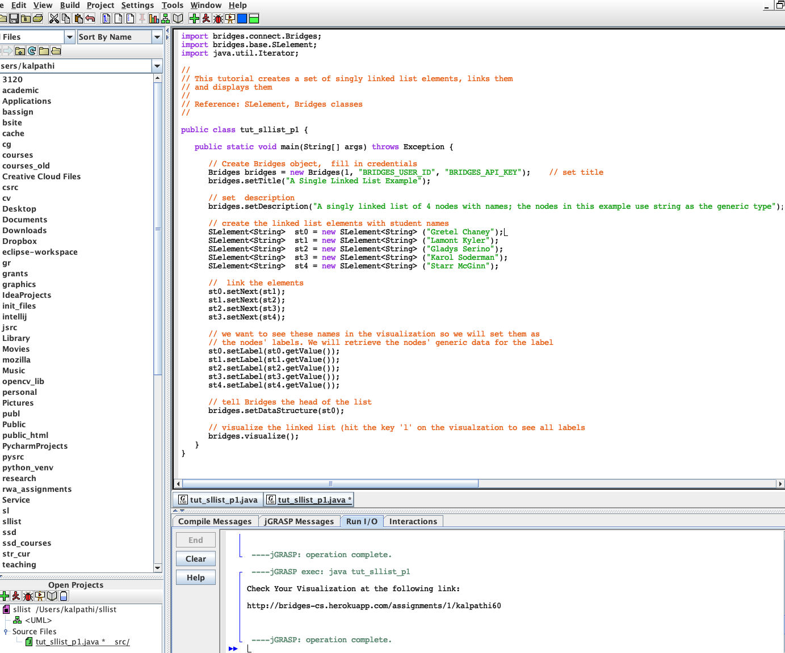

Step 1: Install jGRASP
- If you do not have jGRASP installed, download it from the jGRASP site and install it on your computer.
- jGRASP requres Java 1.6 or higher to be installed, else you will get the error "Unable to locate a java executable. Java 6 or higher must be installed to run jGRASP."
|
Step 2: Create Bridges Account
-
Visit the Bridges main page and create yourself an account by clicking the login button on the top navigation bar. After creating your account, click on your profile name in the upper right corner to
view your profile. Once in your profile, you will see your API Key; you will need this API key in part 2 of the tutorial(as well as in every BRIDGES program you write).
NOTE: Make sure to remember your password. There is no password recovery option, and you can only have one account per email address.
|
Step 3: Create a Java Project
- Open Project-->New
- Follow the Project menu directions and create a Java Project at a convenient location. This will create a new folder on your drive.
|
Step 4: Import Jar File into project
- Download the Bridges (Java) from the BRIDGES website and save it in a convenient place on your drive.
- In jGRASP, Open Settings-->PATH/CLASSPATH-->Project and select the CLASSPATH tab.
- Click the New button, and enter the path to the Bridges JAR file.
|  |
Step 4: Create, Build, Execute a BRIDGES Java Program
- Open File-->New-->Java
- Go to this
BRIDGES Tutorial and copy/paste the Java tutorial program into
the main window by creating a new file. Save the file and make sure file name
matches the class name.
- Set an assignment number, and your credentials (user name, API key) in the
line that creates the Bridges object at the beginning of the program.
- Compile the program by hitting the Build-->compile button followed
by hitting the Buile->Run button .
- If there are no errors, you will see a link printed on the console. Use
that to visualize the output as seen in the image.
|
 |